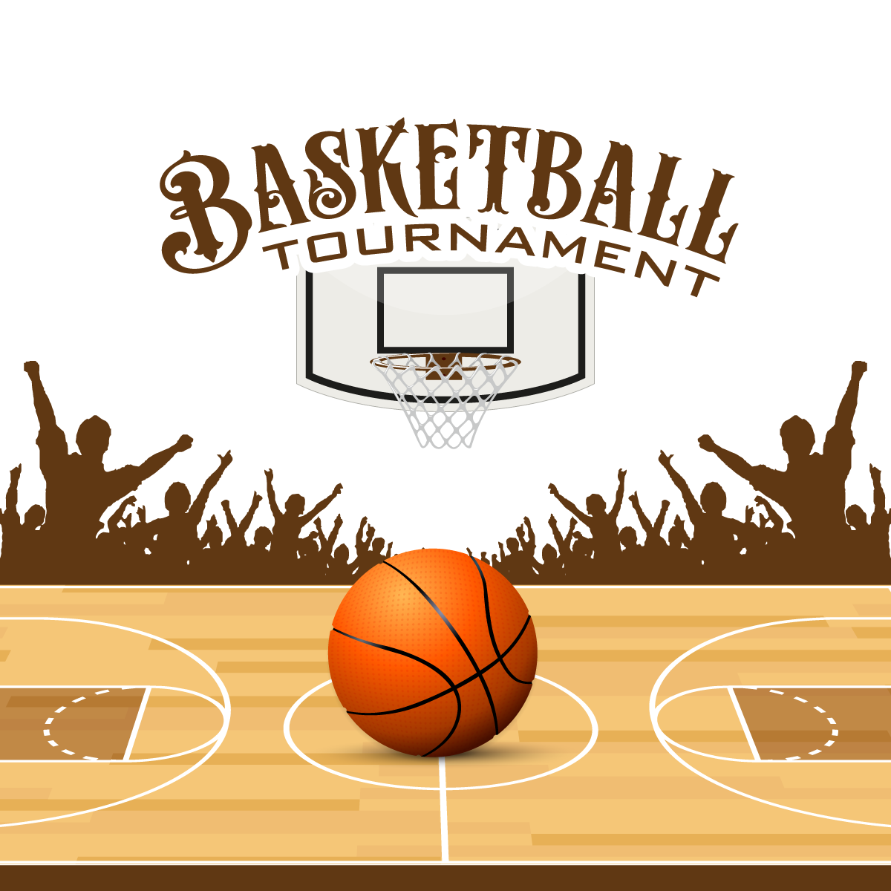
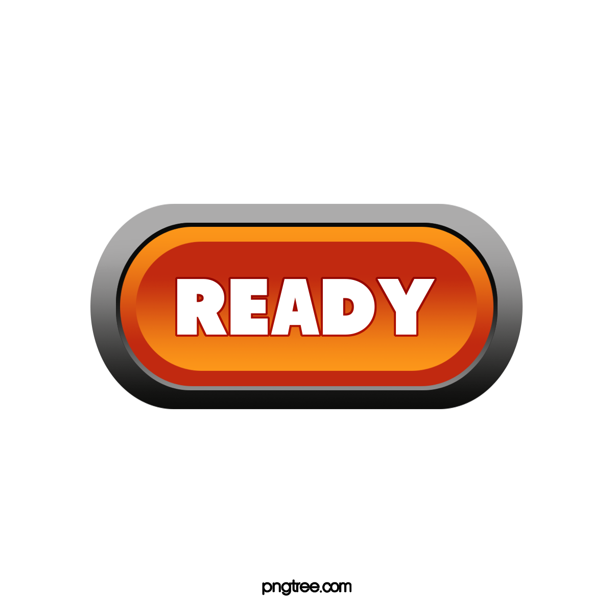
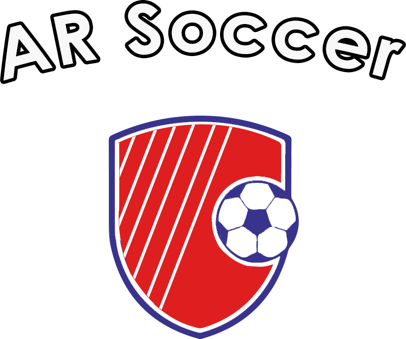
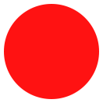
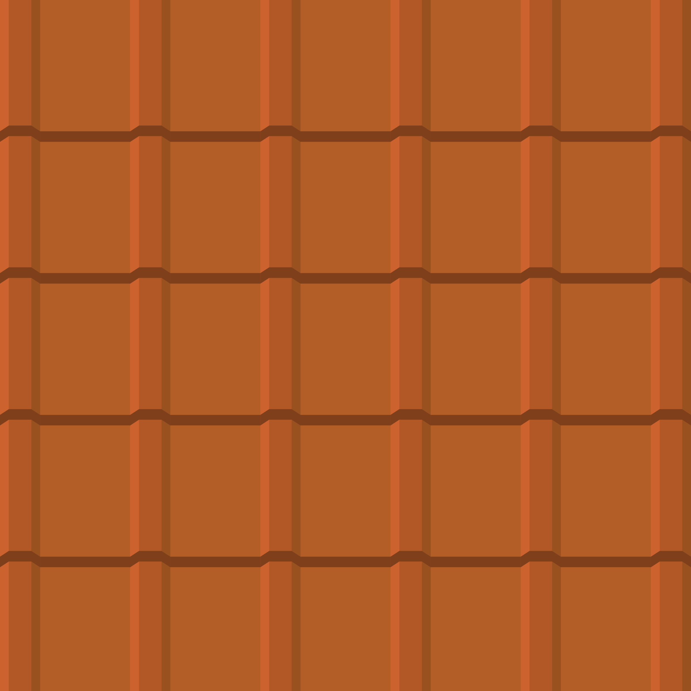

<!-- Copyright (c) 2020 8th Wall, Inc. -->
<!-- body.html is optional; elements will be added to your html body after app.js is loaded. -->

<!-- Add the tap-place component to the scene so it has an effect -->


<div id="startdiv" style="z-index:10" >
    

    <div id='header_block'>
   
    
    </div>
      
</div>


<div id="finaldiv" style="z-index:10" >
    <!---->
    
    <div id='header_block'>
    <h1 class='header_item'>Powered By</h1>
    
    </div>
      
</div>





<!--
<!--style=" z-index: 10;">-->

<a-scene
  tap-place
  xrextras-almost-there
  xrextras-loading="loadBackgroundColor: #D4D4D4;
  cameraBackgroundColor: #D4D4D4;
  loadImage: #quepa;
  loadAnimation: pulse"
  xrextras-runtime-error
  renderer="colorManagement:true"
  xrweb>

  <!-- We can define assets here to be loaded when A-Frame initializes -->
  <a-assets>
    <!--<a-asset-item id="Basketball_hoop" src="assets/Basketball_hoop.glb" ></a-asset-item>-->
    <a-asset-item id="bucket" src="assets/bucket.glb" ></a-asset-item>
    <a-asset-item preload="auto" class="a-sound" id="splatSrc" src="assets/audio.m4a" response-type="arraybuffer"></a-asset-item>
    <a-asset-item preload="auto" class="a-sound" id="scoredSrc" src="assets/miss_sound.m4a" response-type="arraybuffer"></a-asset-item>
    
    
    
    
    
    
    <a-asset-item id="tomatoModel" src="assets/ball.glb"></a-asset-item>

  </a-assets>

  <!-- The raycaster will emit mouse events on scene objects specified with the cantap class -->
  <a-camera
    id="camera"
    position="0 8 0"
    raycaster="objects: .cantap"
    cursor="
      fuse: false;
      rayOrigin: mouse;">
    <a-sound id="splat" src="#splatSrc"></a-sound>
    <a-sound id="scoredsound" src="#scoredSrc"></a-sound>
  </a-camera>
  
<!-- used to create riceballs bowls -->
    
<a-entity
    light="
      type: directional;
      intensity: 0.8;
      castShadow: true;
      shadowMapHeight:2048;
      shadowMapWidth:2048;
      shadowCameraTop: 20;
      shadowCameraBottom: -20;
      shadowCameraRight: 20;
      shadowCameraLeft: -20;
      target: #camera"
    xrextras-attach="target: camera; offset: 0 15 0"
    position="1 4.3 2.5"
    raycaster="objects: .collidable"  rotation="90 0 0"
    shadow>
    </a-entity>

    <a-light type="ambient" intensity="0.5"></a-light>

    <!-- area to place object--> 
    <a-plane id="placeobj" src="#tap" height="10" width="10" rotation="-90 0 0" position="0 -3 -25" material=" transparent: true" class="cantap" 
    shadow></a-plane> 
    <!--error ide bt it works fine-->
   <a-plane id="footballground" src="#groundimg" height="250" width="170" rotation="-90 0 0" position="0 -5 45" material=" transparent: true" class="cantap" 
    shadow></a-plane> 
    
<!-- ground for riceballs-->
    <a-box
    id="ground"
    static-body
    scale="1000 2 1000"
    position="0 -4.75 0"
    material="shader: shadow; transparent: true; opacity: 0"
  
    shadow>
  </a-box>
</a-scene>


